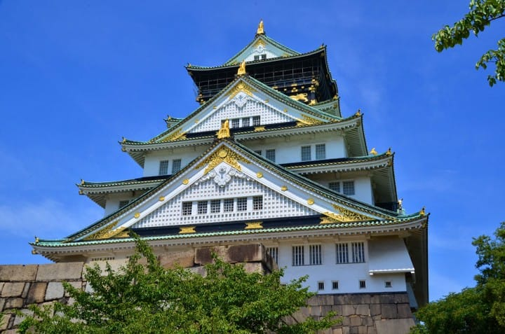

11/06 June
Osaka là thành phố du lịch được yêu thích cùng với Tokyo. Bài viết này xin giới thiệu với các bạn về thông tin cần thiết khi du lịch Osaka từ cách đi, các khu vực, đến các địa điểm thăm quan, món ăn ngon, các sự kiện.
Osaka là một thành phố lớn cách Tokyo khoảng 400km. Từ Tokyo các bạn có thể di chuyển bằng Shinkansen khoảng 1 tiếng 30 phút, đây là thành phố tiêu biểu của vùng Kansai. Osaka phát triển thành 1 trong những đô thị lớn như ngày nay từ cách đây khoảng 500 năm trước. Võ sĩ đạo của Nhật Bản Toyotomi Hideyoshi đã xây lâu đài ở vùng đất này, lấy Osaka làm cứ điểm để phát triển văn hoá, lưu thông. Đây là đại đô thị lớn thứ 2 sau Tokyo. Xét về mặt ẩm thực, Osaka rất phát triển và còn được mệnh danh là "Nhà bếp quốc dân". Đây là nơi tập trung các món ăn ngon của các địa phương trên cả nước. Ngày nay, Osaka thu hút du khách bởi các món ăn ngon đặc thù của Osaka như takoyaki, okonomiyaki, teppanyaki,...và các điểm thăm quan như lâu đài Osaka, con phố Dotonbori,...
Cách di chuyển từ Tokyo đến Osaka thuận tiện nhất là Shinkansen. Từ ga JR Tokyo đến ga JR ShinOsaka khoảng 2 giờ 30 phút, mức phí khoảng 15,000 Yên. Shinkansen cũng ít rung lắc hơn, ghế ngồi cũng khá đẹp nên các bạn có thể di chuyển khá thoải mái. Thời gian di chuyển cũng ngắn hơn so với các phương tiện khác.
Osaka có đầy đủ phương tiện giao thông công cộng vì vậy các bạn có thể di chuyển đến các địa điểm thăm quan bằng tàu điện, tàu điện ngầm, xe buýt,...Tại các ga chính có rất nhiều tuyến tàu chạy qua, vì vậy các bạn nên tìm hiểu kỹ trước về cách đi đến các địa điểm muốn đến.
Khu vực lâu đài Osaka là khu vực có thể tìm hiểu về lịch sử quanh lâu đài Osaka. Ngoài lâu đài ra còn có các bảo tàng ví dụ như bảo tàng lịch sử,...Ở đây còn có khu Kyobashi là nơi vẫn còn lưu lại khu phố sầm uất xa xưa, đây là cũng nơi các bạn có thể cảm nhận lịch sử Osaka. Khu vực lâu đài Osaka cũng được yêu thích bởi các địa điểm mua sắm mới như Osaka Business Park hay Mitsui Outlet Park Osaka Tsurumi,...Đây là khu vực các bạn có thể trải nghiệm cả ngày nay và ngày xưa của Osaka.
Khu vực Tennoji, Abeno, Shinsekai là khu vực ở phía Nam của thành phố Osaka. Ở đây có nhiều địa điểm thăm quan mà trước tiên phải kể đến là các Landmark Tower như Tsutenkaku hay Abeno Harukas, ngoài ra còn có sở thú, bảo tàng, đền chùa,...
